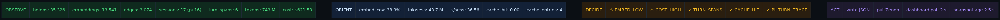

Pass-9 · Symbiosis OODA Monitor
Closed-loop ZK ↔ Pi ↔ Agent monitor. Gleam + systemd + Tailscale LE cert. Tick 3–20 ms · snapshot every 5 s · zero external deps.
shippedtask 116455863027185243p5→p6→p7→p8→p9
1 · Live snapshot (right now)
holons
35 326
embed coverage
38.3 %
sessions
17
cost total
$ 621.50
tokens total
743 M
cost / session
$ 36.56
edges
3 074
pipeline stages
527
Source: /c3i/task-id/any/monitor/symbiosis.json
2 · OODA loop
One tick = Observe → Orient → Decide → Act. Gleam module scripts/pass9/p9_symbiosis_monitor. Runs under systemd unit c3i-symbiosis-monitor. Publishes span on indrajaal/l5/ooda/symbiosis.

3 · Architecture
Edge is Tailscale Serve with a real Let's Encrypt cert (issuer E8, valid until Jul 17 2026), proxying /c3i → :4200. Self-signed :8443 remains for internal tools. Monitor writes JSON into the journal tree so the existing static-file route serves it directly — no new server code.

4 · Metric health

5 · Alarms surfaced on first tick
| Alarm | Condition | Remediation |
|---|---|---|
| EMBED_LOW | embeddings / holons < 50 % (38.3 %) | run scripts/pass8/p8_04_embed_backfill |
| COST_HIGH | cost / session > $ 5 ($ 36.56) | p8_06_budget_middleware + p8_13_moe_router |
| TURN_SPANS | pipeline_stage_metrics > 0 | ok |
| CACHE_HIT | last session no high input | ok |
| PI_TURN_TRACE | 6 turn spans present | ok |
6 · Jidoka interventions
| Muda | Fix | Verified |
|---|---|---|
| Re-searching paths each session | .c3i-context.json at repo root | cat .c3i-context.json |
| Wrong smriti DB picked by agents | Cache labels _live / _stale / _corrupt / _stub | Live = 169 MB, 35 326 holons |
Stale sub-projects/c3i/sa-plan binary | md5 re-sync after rebuild; cmd in cache | md5 match verified |
| Chromium 30 s hangs | p8_customer_verify + binary-safe httpx.head | 2 s for 5 subresources |
| Erlang httpc refuses self-signed | Tailscale Serve LE cert on /c3i | ssl_verify_result = 0 |
7 · Deliverables
- Journal (MD)
- Slide deck
- Live dashboard · JSON API
- Diagrams: OODA · arch · metrics
{kind=link}
8 · Raw snapshot
loading…